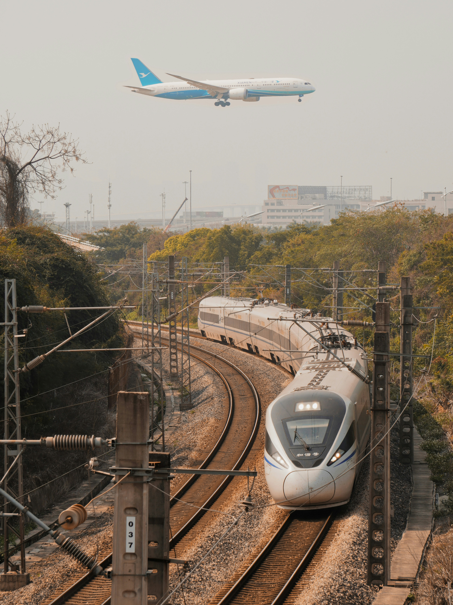
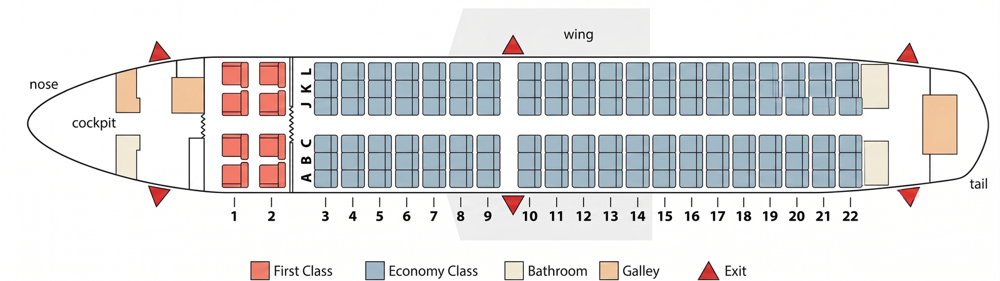
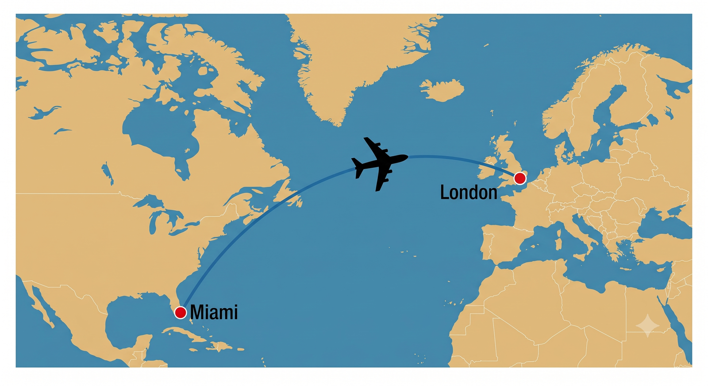

What do you find most stressful about air travel — check-in, take-off, landing, or turbulence?
What's the longest flight you've ever been on? Where did you go?
Have you ever had a really bad travel experience? What happened?
✈️ Fun fact to discuss:
Statistically, flying is 50 times safer than driving. Yet many people feel more nervous on a plane than in a car. Why do you think that is?
Photo: Iler Stoe / Unsplash
🎧 Listening
Train or Plane?
🎧 Announcements
Listen to some announcements. Would you hear them when traveling by train or by plane? Click to select T or P.
A
F
B
G
C
H
D
I
E
J

Photo: Kenny Wu / Unsplash
🎧 Listening
Train Announcements
🎧 Announcements
Listen again to the announcements you would hear when traveling by train (or subway).
What do you need to know if you want to travel on...?
1 the 9:04 train to Waterbury
2 the Hudson Line service to Grand Central Terminal
3 the 10:25 to Chicago, in the dining car
4 the J, M, and Z trains
#
Suggested Answer
1
The train will now leave from track 103.
2
Train service is delayed 10 to 15 minutes.
3
The dining car is at the back of the train.
4
You need to change at the next stop (Delancey Street).
🎧 Listening
Plane Announcements
🎧 Announcements
Listen again to the ones you would hear when traveling by plane. Answer the questions for each one.
Would you hear it in the airport terminal or on the plane?
What is it asking people to do?
#
Terminal or on the plane?
What is it asking people to do?
1
✔ Relax and enjoy the flight.
2
✔ Pay attention to the safety instructions and locate your nearest emergency exit.
3
✔ Go to Gate 3 immediately.
4
✔ Fasten seat belts, place carry-on luggage under the seat, put seat backs and tray tables in their upright and locked positions, and turn off all electronic devices.
5
✔ Passengers with children and needing special assistance can begin boarding; have boarding pass and ID ready.
6
✔ Disembark by either the front or rear exits and make sure you have all your belongings.
💬 Speaking
Travel Experiences
Answer these questions with as much detail as you can.
🚆
Question 1
Which do you find more stressful — traveling by train or by plane? Why?
📢
Question 2
How often do you hear announcements in trains and airplanes? Do you always understand what they say?
🇬🇧
Question 3
Have you ever had an experience hearing an announcement in English? How was it?
✈️
Question 4
Have you ever missed a train or plane? How was it?
🤔
Question 5
If you had to choose between a long train journey and a short flight, which would you pick? Why?
🔊
Question 6 — Agree or disagree?
Some people find airplane safety announcements annoying.
📚 Vocabulary
At the Airport
Click a word, then click its matching sentence to pair them.
📚 Vocabulary
On Board
Complete the text with the words from the box. The first one is done for you as an example. Click a word, then click a blank to place it.
aisle ✓
I often fly to Chile on business. I always choose an aisle seat, so that I can get up and walk around more easily. My favorite place to sit is the emergency exit , so I have more legroom. Sometimes there's when the plane flies over the Andes, which I don't enjoy, and the tells the passengers to put their on. There aren't any to Santiago from Calgary, so I usually have to get a in Toronto. Whenever I take , I always suffer from because of the time difference and I feel tired for several days.
Photo: Tom Barrett / Unsplash
📚 Vocabulary
Phrasal Verbs in Air Travel
Click a phrasal verb from the box, then click a sentence to complete it in the past tense. Number 1 is done for you as an example.
Word bank:drop off
1My husband dropped me off at the airport two hours before the flight.Example ✓
2I online the day before I was going to fly.
3As soon as I the plane, I put my bag in the overhead compartment.
4The plane late because of the bad weather.
5When I my luggage at the baggage claim, I bumped into an old friend who had been on the same flight.
6I the immigration form for the US, which the cabin crew gave me shortly before landing.
7When I the plane, I felt exhausted after the long flight.
8My flight arrived really late, but luckily a friend me at the airport.
💬 Speaking
Airport Experiences
Draw a boarding pass and share your experience. The vocabulary on the stub are words from the last three slides — try to use them! Work through all 9.
✈
AEF Air
Boarding Pass
Flight
QA-001
CLSR
Classroom
✈
SEAT
Your Seat
Which do you prefer — aisle, middle, or window seat? Why?
💡 From the lesson
Card 1 of 9
📖 Reading
How to Get the Best Seat
Read the title and click the seat on the plane you think it describes. Match correctly to reveal the explanation!

💬 Discussion
According to the information in the article, which do you now think would be the best seat for you?
📐 Grammar
so / such…that — Stage 1: Meaning
Look at these sentences from the article. For each one, discuss the questions — then click Reveal to check.
Sentence A
There are so many things conspiring against you that it's hard to nod off.
Concept check
Did the person sleep well on the flight?No.
What made it hard to sleep?So many things.
Is "hard to nod off" the cause or the result?The result.
Sentence B
These seats are in such high demand that some airlines charge more for them.
Concept check
Are these seats very popular?Yes, very.
What happens because of that demand?Airlines charge more.
Which word introduces that result?"that"
Now think — what do both sentences have in common? What does so / such…that express?
Key concept
so / such…that shows that something is so extreme it produces a result
so / such…→extreme degree→that→RESULT
📐 Grammar
so / such…that — Stage 2: Form
The structure you choose depends on what follows so or such. Study the four patterns.
PATTERN 1
so + adjective / adverb + that
so + adj / adv + that
The taxi driver drove so quickly that we got to the airport on time.
PATTERN 2
so much / many + noun + that
so much + uncountable noun so many + plural noun
There was so much traffic that we nearly missed our flight. There were so many buses that we nearly missed our flight.
PATTERN 3
such a + adj + singular countable noun + that
such a + adj + singular noun
It was such a great hotel that we want to go back there.
PATTERN 4
such + adj + uncountable / plural noun + that
such + adj + uncountable / plural noun
We had such terrible weather / such small rooms that we didn't enjoy the vacation.
💡
Note: In spoken English, that is often omitted — e.g. "The flight was so long I nearly went crazy!" — but it is always used in formal writing.
📐 Grammar
so / such…that — Stage 3: Pronunciation
Two key things happen when we say these structures out loud.
1
so and such are stressed
We stress so / such to show the intensity of the situation. The stress signals: "what comes next is extreme." The adjective that follows is also stressed.
2
that is weak and unstressed
When that is used as a conjunction here, it is reduced to a weak form: /ðət/ — never the strong /ðæt/ you use when pointing at something.
Rhythm pattern
Build-up → peak → release: "It was SO long… /ðət/ I fell asleep."
Say these out loud — stress the CAPITALS:
The flight was SOLONG/ðət/ I got really bored.
I had SUCH ANOISY child behind me /ðət/ I couldn't sleep.
There were SO MANYPEOPLE/ðət/ we had to wait 45 minutes.
We had SUCHTERRIBLE weather /ðət/ we didn't enjoy the vacation.
💬 Teacher tip: Read each sentence aloud, then ask the student to repeat with the same stress. Then try swapping the end: e.g. "It was so long that…" → student completes with their own ending.
📐 Grammar
so / such…that — Stage 4: Practice
Click a word from the box, then click a blank to place it.
Word bank:
1The flight was long that I got really bored.
2I had noisy child behind me that I couldn't sleep.
3I slept badly on the flight from New York that the jet lag was worse than usual.
4There were people at check-in that we had to stand in line for nearly 45 minutes.
5We had luggage that we had to get two carts.
6We met nice people in the hotel that we were never bored.
💬 Speaking
Talk about your travel experiences.
Choose the section that applies to you and answer with as much detail as you can.
✈️
If you have flown several times
1
How often do you fly? What kinds of airlines do you usually use?
2
When was the last flight you took? Where did you go? What for?
🚌
If you have never / hardly ever flown
1
When was the last time you went on a trip? Where did you go? What for?
2
How do you usually travel — a) short distances, b) longer distances? Why do you choose to travel this way?
3
What's your favorite way of traveling? Why?
💭
Have you ever…
(everyone answers these!)
⏳
…been very delayed when traveling? How long for? What did you do while you waited?
👶
…had to sit near a screaming baby — or a child that kept kicking your seat? What did you do?
🎧 Listening & 💬 Speaking
Predict, Then Listen
You are going to listen to an airline pilot talking on a radio program. Before you listen, read the questions and write your predictions. Then listen and add keywords from his answers.
1
What weather conditions are the most dangerous when you are flying a plane?
2
Is turbulence really dangerous?
3
Which is more dangerous — take-off or landing?
4
Why do passengers have to turn off electronic devices and put their tray tables up during take-off and landing?
🎧 Listen and check your predictions. How many did you get right?
Score:
Richard's answers:
When the wind changes direction very suddenly — especially during take-off and landing. Very unusual: only 3–4 times in 25 years.
No. Even strong turbulence won't damage the plane. But passengers should wear their seat belts all the time during the flight.
Both are dangerous ("critical 8 minutes"). Take-off is slightly more dangerous — there is a critical moment when the plane is accelerating but hasn't yet reached take-off speed; the pilot has very little time to abort.
Not because of device interference — aircraft systems are too sophisticated for that. It's to avoid distraction in an emergency. Tray tables could also injure passengers or prevent evacuation.
💬 Let's discuss!
💭 What did the pilot say that might make you feel more relaxed the next time you fly?
✈️ Are you afraid of flying? What is the most worrying part of being on a plane for you?
🌩️ Have you ever experienced turbulence or a scary moment on a plane? What happened?
🛩️ Would you ever want to learn to fly? Why / why not?
📐 Grammar
Routine flight goes "batty"
Read the beginning of the article and answer the question below.
Routine flight goes "batty"
Passengers on a Spirit Airlines flight from Charlotte, North Carolina to Newark, New Jersey on July 31, 2018, were surprised when a bat was spotted flying on board. The plane had been flying for nearly 30 minutes before the creature made its appearance in the passenger cabin. Up until that point, the flight had been routine.
What had made its way onto the plane?
A bat had made its way onto the plane.
📐 Grammar
Narrative Tenses — Choose the Correct Form
Read the full story. Click the correct verb form for items 1–8.
📰 Full article
Routine Flight Goes "Batty"
Passengers on a Spirit Airlines flight from Charlotte, North Carolina to Newark, New Jersey on July 31, 2018, were surprised when a bat was spotted flying on board. The plane had been flying for nearly 30 minutes before the creature made its appearance in the passenger cabin. Up until that point, the flight had been routine. Most passengers quietly in their seats, enjoying a drink and a snack. Once passengers that a bat was on the plane, they began taking videos as it frantically swooped through the cabin. One video posted to social media shows a passenger running down the aisle as others .
Peter Scattini, one of the passengers on board, a video of the bat with the following text, "Me, twice a year: 'I'll never fly Spirit again.' Me, this morning, after deciding I'd rather save 12 dollars." Another passenger, who the bat, posted a video that showed people laughing as they watched the bat fly through the cabin.
A spokesperson for Spirit Airlines said, "The bat was eventually corralled into a lavatory and once on the ground by animal control officers. The aircraft was disinfected and searched as a precaution." The spokesperson continued, "It is believed the bat started its journey in Charlotte, flying into an overhead bin while our crews overnight maintenance. No one was hurt in this incident, including the bat."
Videos of the bat viral on social media, prompting hundreds of people to make jokes about the airline, including Stephen Colbert, host of The Late Show, who tweeted, "I can't believe there was a bat on a Spirit Airlines flight. I've only ever seen raccoons."
Adapted from The Independent
📐 Grammar
Narrative Tenses — Stage 1: Meaning
Look at the highlighted sentence from the story, then answer the questions to check what it means.
📖 Look at this sentence from the story:
"The plane had been flying for nearly 30 minutes before the creature made its appearance in the passenger cabin. Up until that point, the flight had been routine."
Was the flying finished when the bat appeared, or still happening?
✅ Still happening — it continued right up to that moment.
Do we know how long the plane had been flying?
✅ Yes — nearly 30 minutes. That's why we use the continuous — it emphasizes duration.
Now think — what does the past perfect continuous tell us?
⏳
Past perfect continuous
had been + -ing
Action that started before and continued up to the main event. Emphasizes duration and continuation.
✅
Past perfect simple
had + past participle
Action that finished before the main event. Emphasizes completion.
The plane had been flying (still going) vs. They had won tickets (already done, finished).
📐 Grammar
Narrative Tenses — Stage 2: Form
Study how each tense is formed and when it's used in a story.
1 — Simple past
Form
V-ed / irregular verb
Use
Consecutive actions / the main events of a story.
We arrived at the airport and checked in.
We realized what had happened.
2 — Past continuous
Form
was / were + V-ing
Use
Longer background action in progress when another (shorter) action happened.
We were having dinner when the plane hit turbulence.
Most people were reading or were trying to sleep.
3 — Past perfect
Form
had ('d) + past participle
Use
"Earlier past" — action completed before the main events. Emphasizes completion.
We suddenly realized we 'd left a suitcase in the taxi.
They 'd won three free tickets in a competition.
4 — Past perfect continuous
Form
had ('d) been + V-ing
Use
Longer action that started before and continued up to the main event. Emphasizes duration.
We 'd been flying for two hours when the captain spoke.
Lina was crying because she 'd been reading a sad book.
⚡ Past perfect simple or continuous?
Simple → COMPLETION
Lina didn't want to see the movie, because she 'd already read the book.
Continuous → CONTINUATION
Lina was crying because she 'd been reading a very sad book.
⚠️ Non-action verbs (be, have, know, like…) are not usually used in the past continuous or past perfect continuous.
📐 Grammar
Narrative Tenses — Stage 3: Pronunciation
In natural speech, had is almost always contracted or weakened. Listen and repeat.
1 — Contracted form: had → 'd
I'd
aɪd
I'd been learning it for years.
She'd / He'd
ʃid / hid
She'd been reading a sad book.
They'd / We'd
ðeɪd / wid
We'd been flying for 2 hours.
2 — Weak forms in connected speech
had → həd in questions
How long had you been walking?
was / were → weakened
were sitting → wər ˈsɪtɪŋ
was going → wəz ˈɡoʊɪŋ
3 — Drill — say it naturally!
The plane 'd been flying for 30 minutes.
'd been → əd bɪn
Most passengers were sitting quietly.
were → wər
I was really fed up because we 'd been waiting.
we'd been → wɪd bɪn
She went to the police because someone 'd stolen her bag.
'd → əd
📐 Grammar
Narrative Tenses — Circle the Correct Form
Click the correct verb form for items 1–10.
● Simple past — main events● Past continuous — background / in progress● Past perfect — earlier past● Past perfect continuous — duration before
Ava and Ryan Miller
got ✓
/ were getting
a nasty surprise when they
at Calgary International Airport yesterday with their baby, Alec. They
three free plane tickets to Mexico in a competition, and they
their trip for months. But, unfortunately, they
to get a passport for their son, so Alec couldn't fly. Luckily, they
very early for their flight, so they still had time to do something about it. They
to the police station in the airport to apply for an emergency passport. Ava
with Alec to the photo booth, while Ryan
the forms. The passport was ready in time, so they
to the gate and
on the plane just in time.
📐 Grammar
Narrative Tenses — Past Perfect Simple or Continuous?
Put the verb in the past perfect simple (had done) or continuous (had been doing). If both are possible, use the continuous form.
Example:
His English was very good. He'd been learning it for five years. (learn)
1 I was really fed up because I for hours. (wait)
2 She went to the police to report that someone her bag. (steal)
3 It all morning, the streets were wet, and there were puddles everywhere. (rain)
4 The tourists' faces were very red. They in the sun all morning and they any sunscreen. (sit, not put on)
5 I could see from their expressions that my parents . (argue)
6 How long before you realized that you were lost? (you / walk)
💬 Speaking
Narrative Tenses — Spin & Speak!
Click Spin! Get a challenge. Answer using the right narrative tense.
Spin the wheel to get your challenge!
8 questions remaining
None yet.
🎓 Quick reminder: ● Simple past — main events ● Past continuous — background / in progress ● Past perfect — earlier past ● Past perfect continuous — duration before
🔊 Pronunciation
Irregular Past Forms
Look at the verbs in the list. Write the simple past of each verb in the correct column (same vowel sound as the example word).
Which ones of the verbs from the table have a past participle that is different from the simple past form? Write these past participles in the box.
Verbs with a different past participle:
fly → flown · throw → thrown · hide → hidden · drive → driven
ride → ridden · write → written · fall → fallen · lie → lain
🔊 Pronunciation
Irregular Past Forms — Anecdote
Read a short anecdote about a flight. Guess what the missing verbs might be.
This ¹ when my wife and I were on a flight to New York, and we'd been ² for a few hours. I was ³, and my wife was ⁴ a movie, when suddenly we ⁵ an announcement – "Is there a doctor on board?" It ⁶ out that a woman was ⁷ a baby! Luckily, two doctors⁸ forward, and the baby was ⁹safely.
Listen and fill in the blanks. Then practice reading the anecdote aloud with the correct rhythm, with light stress on the main verbs and other bold words.
💬 Speaking
What Would You Have Done?
Read the news article. What would you have done if you had heard the announcement? How would you have felt?
Nightmare over the Atlantic

At 6:35 p.m. on January 13, British Airways flight 206 took off from Miami to London. It had been flying for about three hours, and was over the Atlantic, when suddenly a voice came out of the loudspeakers. "This is a passenger announcement. We may shortly have to make an emergency landing on water."
Immediately, panic broke out and passengers were screaming and shouting. Most people thought that the plane was about to crash into the Atlantic. But about 30 seconds later, the cabin crew started to run up and down the aisle saying that the message had been played by accident, and that everything was OK. By this time, a lot of the passengers were crying, and trying to get their life jackets out from under their seats.
Afterwards, many passengers said that they had been traumatized, and that it had been the worst experience of their lives. They complained that the captain hadn't given them any explanation until just before landing, and even then, hadn't told them what had really happened. Later, a British Airways spokesperson apologized to passengers on the flight, and said that a pre-recorded emergency announcement had been activated in error.
Imagine you were one of the passengers on the plane. Retell the story in your own words using the prompts below.
Setting the scene
Jan. 13 · Miami · London · three hours · passenger announcement · emergency landing · water
The main events
panic · scream · shout · crash into the Atlantic · 30 seconds later · crew · aisle · by accident · cry · life jackets
What happened in the end
passengers · traumatized · complain · captain · just before landing · spokesperson apologized · error
💬 Speaking
True or Invented?
Choose a topic and plan an anecdote. It can be true or invented — but tell it so convincingly that your teacher can't tell the difference!
① Pick a topic
🧳
were robbed or lost something important when you were traveling or on vacation.
🗺️
got completely lost while traveling in another city or country.
🏠
arrived home from a trip and had a surprise.
② Is your story true or invented?
🔒 Got it! Now plan your story below.
③ Plan your story
📖 Telling an anecdote
Setting the scene
This happened (to me) when I was… I was…-ing when… I…, because I had / hadn't…
The main events
I decided to…, because… So then I… Suddenly / At that moment,…
What happened in the end
In the end / Eventually,… It turned out that… I felt…
travel / trip / journey — key differences in meaning
📖 Reading
We read "How to get the best seat" and matched seat descriptions to passenger types, then filled in vocabulary from context. We also read "Nightmare over the Atlantic" — a real news story about an accidental emergency announcement — and retold it in our own words.
🎧 Listening
We listened to plane and train announcements and picked out key information. We also heard an interview with an airline pilot and answered comprehension questions, and listened to an anecdote about a flight to fill in the missing verbs with the correct rhythm.
📐 Grammar — Narrative Tenses
Simple past
main events The pilot announced an emergency.
Past continuous
background / scene Passengers were reading when it happened.
Past perfect
the earlier past The message had been played by accident.
Past perf. continuous
duration before We 'd been flying for three hours.
so / such…that It was such a long flight that she fell asleep. The flight was so long that she fell asleep.
Sentence rhythm & stress — light stress on main verbs and content words.
💬 Speaking
We retold "Nightmare over the Atlantic" as if we had been passengers on the flight. Then we played the True or Invented? challenge — telling a personal anecdote convincingly while the teacher guessed whether the story was real or made up!
📝 Homework
Fasten your seat belts
📝 Homework
HW1 — Vocabulary: Formal Language
Click a word from the list, then click the blank to fill it in. Replace each bold word or phrase with a more formal one.
Word list:approximatelylocatepersonal electronic devicesplaceproceed todisembarkrequiringrear
1Cell phones, tablets, and laptops may be used in flight mode during the flight. → personal electronic devices(example)
2 There are bathrooms at the front and at the back of the plane. →
3 Our flight time today is about two and a half hours. →
4 The crew will be passing through the cabin with earphones for any passengers needing them. →
5 Passengers to New York are asked to go to Gate 36 immediately. →
6 Please check that you have all your belongings before you leave the plane. →
7 Please put your carry-on baggage in the overhead compartment. →
8 Please take time now to find your nearest emergency exit. →
📝 Homework
HW2 — Vocabulary: Airport Words
Click the correct word to complete each sentence.
1
They booked first-class tickets, so they could use the airline lounge ✓ / airport terminal while waiting for their flight. (example)
2 It didn't take long for me to check in my suitcase at the .
3 The passengers were stopped at for their bags to be checked.
4 I showed my boarding pass and ID at the before I boarded my flight.
5 I didn't have a boarding pass, so I had to stand in line at the to get one.
6 We could see our plane on the while we were waiting to board.
7 We parked as close as possible to the because we were late.
8 The quickest way to find your flight is to look at the .
9 I was wearing boots, so I had to take them off at .
10 When I went to the , I found that my suitcase hadn't arrived.
📝 Homework
HW3 — Vocabulary: Complete the Sentences
Click a word from the list, then click the blank to fill it in.
Word list:arrivalsbusiness classcartfirst classdelayedillegal goodscollectluggage
1
Companies usually pay for employees to travel business class. (example)
2 If your suitcase has wheels, you don't need to use a .
3 There's usually a line of taxis waiting outside .
4 Passengers who are traveling sit in the most comfortable seats on the plane.
5 You should always keep your with you when you're in an airport.
6 Customs officers check travelers' bags to make sure they are not trying to bring into the country.
7 It can sometimes take a long time to get out of the airport if you have to wait to your bags from the baggage claim.
8 The departures board informs passengers whether a flight is on time, boarding, or .
📝 Homework
HW4 — Vocabulary: Complete the Text
Complete the text. Use words from the exercises above.
Last year, I wanted to travel from Calgary to San Diego to visit a friend. I had booked an ¹internationalflight from Calgary to Los Angeles and a ²cfl from Los Angeles to San Diego. I printed my ³bp the day before my flight, and I took it with me to the airport. I was able to go right to security in ⁴D because I only had a ⁵cb — a small backpack. After ⁶sc my bag, they opened it and ⁷ch it to make sure I wasn't carrying any ⁸l or ⁹shob, like scissors. When I finally got my bag back, I looked at the ¹⁰db to see if my flight was already ¹¹b. I shouldn't have worried, because the flight was ¹²d. The plane didn't ¹³to until two hours later. When I eventually arrived in Los Angeles, I was happy to see that my next flight was ¹⁴ot. However, just before we were due to ¹⁵b, we were informed that the flight had been canceled — apparently, planes couldn't ¹⁶l in San Diego because of fog. In the end, I finished my journey by train, and I arrived in San Diego eight hours late!
📝 Homework
HW5 — Vocabulary: Crossword
Complete the crossword. All words are related to air travel. The letters in the green box are given as an example.
1
2
3
4
5
6
7
8
9
→ Across
1. the passage between the rows of seats on a plane (AISLE (example))
4. a thing that you fasten around your body to hold you in your seat
5. the people whose job it is to take care of passengers on a plane
6. a series of sudden and violent changes in the direction that air is moving
8. the tired feeling that people often have after a long journey on a plane to a place where the local time is different
9. a flight between places within the same country
↓ Down
2. a flight that transports people over long distances, e.g., between two continents
3. a flight that goes from one place to another without stopping
7. a line of seats on a plane
📝 Homework
HW6 — Travel, Trip, or Journey?
Select the correct word.
1I travel ✓ / journey / trip abroad five or six times a year. (example)
2I had a terrible here — the flight was delayed, and then we had a lot of turbulence.
3Is Hannah back from her to South America?
4We have to 250 miles if we want to see my grandparents.
5My sister wants to go on a around the world after she graduates from college.
6I went on a long across Canada by train last year.
📝 Homework
HW7 — Phrasal Verbs
Complete the phrasal verbs with a particle from the list. Click a word, then click the blank where it goes.
1 Who picked you up from the airport the last time you traveled? (example)
2 When do you usually check for a flight?
3 Who usually drops you at the airport?
4 Have you ever filled a landing card? If so, when?
5 What's the first thing you do when you get a plane?
6 Have you ever picked the wrong bag at baggage claim?
7 Are you usually in a hurry to get the plane? Why / Why not?
8 Do you ever feel nervous when a plane takes ?
Now answer the questions about you.
📝 Homework
HW8 — So / Such … that
Click the correct option.
1Her suitcase was so ✓ / such heavy that she couldn't pick it up. (example)
2It was long flight that we missed our connecting flight.
3There were people at the airport that there weren't any carts left.
4We flew over a beautiful landscape that I took some photos from the plane.
5There was rain that the road to the airport was flooded.
6We were sitting in narrow seats on the plane that it was very uncomfortable.
7The flight attendant spoke quietly that I couldn't hear what she was saying.
📝 Homework
HW9 — Narrative Tenses, Past Perfect Continuous
Click the correct verb form. Select both options if you think both forms work.
💡 When are both correct? Use the simple past perfect for completed actions before another past event. Use past perfect continuous to emphasize duration before that event. When the verb can be either, both are correct.
1Tim couldn't close his suitcase because he had put ✓ / had been putting too many clothes in it. (example — had put = completed action)
2 She for the same airline for eight years before she was promoted.
3 I was delighted when I found my passport. I for it for hours.
4 After I my luggage, I took a taxi to my hotel.
5 I in departures for 20 minutes when I saw that my flight was boarding at a different gate.
6 They in Brooklyn before they moved to Boston.
7 The passengers were angry because the airline their flight.
8 I was surprised when I was told that my suitcase was too big: I it for years without having to pay for it.
📝 Homework
HW10 — Narrative Tenses
Complete the text with the correct form of the verbs in parentheses.
My parents ¹had never flown(never fly) before, so they were very nervous when we ² (arrive) at Logan Airport to take our flight to Mexico. It ³ (rain), so I ⁴ (leave) them at the terminal building with instructions to get in line at the check-in desk while I ⁵ (go) to park my car in the long-term parking lot. However, when I ⁶ (get) to the check-in desk myself, they were nowhere in sight; I ⁷ (look) for them everywhere until it suddenly occurred to me that ⁸ (already / check in) and they ⁹ (wait) for me in the departure lounge. This was a real problem because I ¹⁰ (give) my passport to my mother, so I couldn't check in. I ¹¹ (call) my parents on their cell phone and, fortunately, my mother answered. They ¹² (already / go) through to the departure lounge, and they ¹³ (wait) for me for almost half an hour at the gate. Apparently, my mom ¹⁴ (read) her book and my dad ¹⁵ (do) a crossword.
Why these are correct:
had never flown — past perfect: completed (or not done) before another past event.
arrived — simple past: one of the main sequential events of the story.
was raining / had been raining — past continuous for a background action in progress, or past perfect continuous to stress it had already started; both work.
left — simple past: a main sequential event.
went — simple past: a main sequential event.
got — simple past: a main sequential event.
looked — simple past: a main sequential event.
they had already checked in — past perfect: completed before the moment being described, marked by "already."
were waiting / had been waiting — past continuous for the action in progress, or past perfect continuous to stress duration before that moment; both work.
had given — past perfect: completed before the narrator tried to check in.
called — simple past: a main sequential event.
had already gone — past perfect: completed before the phone call.
had been waiting — past perfect continuous: emphasizes the duration ("almost half an hour") before another past moment.
had been reading / was reading — describes what was in progress at that earlier moment; both work.
had been doing / was doing — describes what was in progress at that earlier moment; both work.
📝 Homework
HW11 — Pronunciation: Vowel Sounds
Click a verb from the box, then click the blank next to the simple past verb that has the same vowel sound.
1bought → caught/ɔ/(example)
6spoke → /oʊ/
2rang → /æ/
7sold → /oʊ/
3made → /eɪ/
8knew → /u/
4let → /ɛ/
9could → /ʊ/
5shut → /ʌ/
10read → /ɛ/
Listen and check.
📝 Homework
HW12 — Sentence Rhythm
Listen and fill in the blanks in the anecdote.
We were on a ¹ to Tokyo, and we'd been ² for about ³hours. I was listening to ⁴, and my ⁵ was sleeping, when ⁶ we heard a very loud ⁷. It ⁸ as if an engine had exploded. The ⁹ didn't tell us what had ¹⁰ until half an hour later.